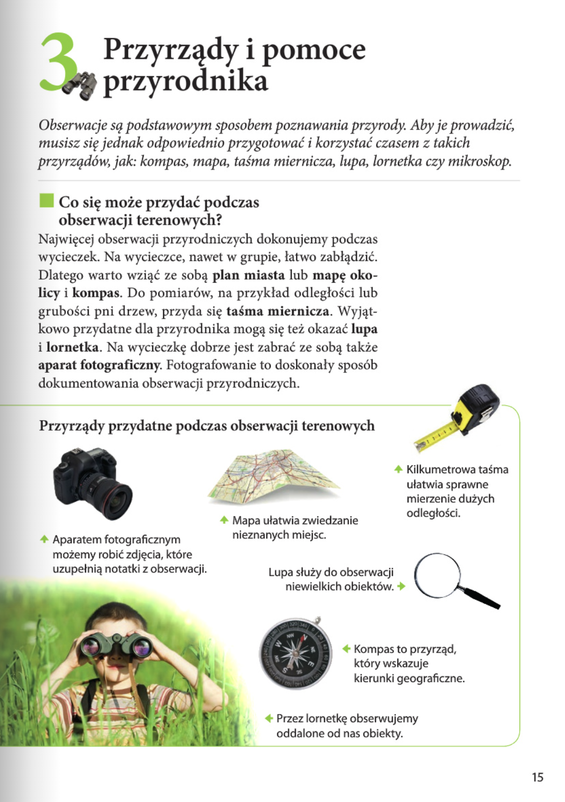
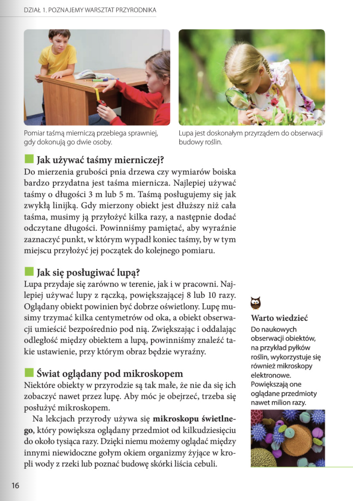
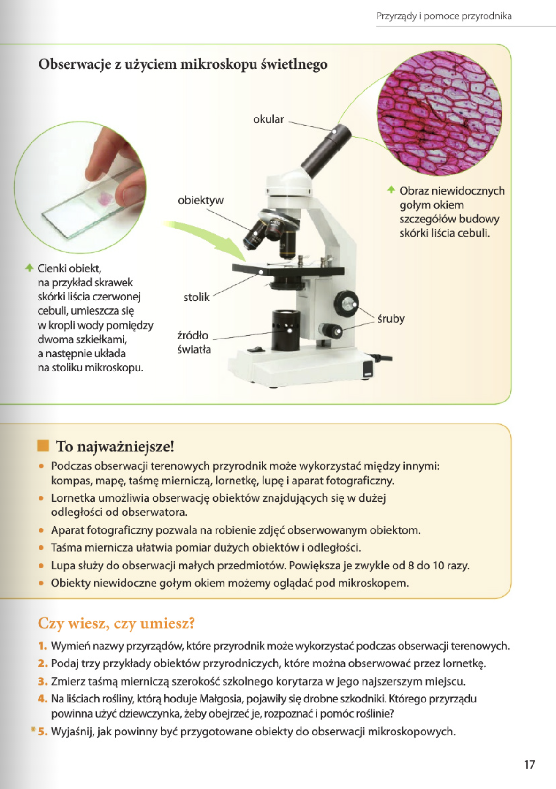
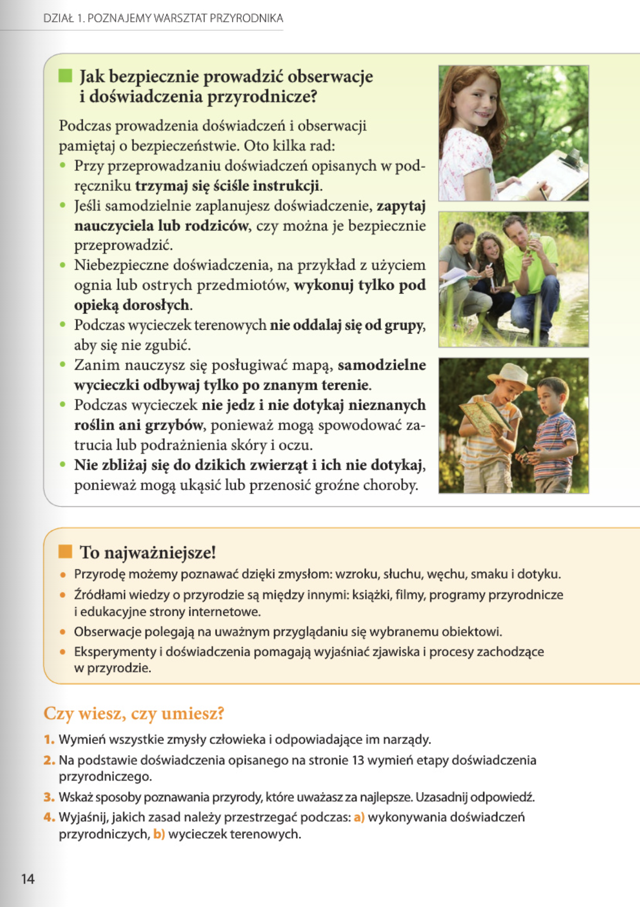

Przyroda
DZIAŁ 1. POZNAJEMY WARSZTAT PRZYRODNIKA: 8-33
Lekcja 3. Przyrządy i pomoce przyrodnika: 15

3 Przyrządy i pomoce przyrodnika
Obserwacje są podstawowym sposobem poznawania przyrody. Aby je prowadzić, musisz się jednak odpowiednio przygotować i korzystać czasem z takich przyrządów, jak: kompas, mapa, taśma miernicza, lupa, lornetka czy mikroskop.
Co się może przydać podczas obserwacji terenowych?
Najwięcej obserwacji przyrodniczych dokonujemy podczas wycieczek. Na wycieczce, nawet w grupie, łatwo zabłądzić. Dlatego warto wziąć ze sobą plan miasta lub mapę okolicy i kompas. Do pomiarów, na przykład odległości lub grubości pni drzew, przyda się taśma miernicza. Wyjątkowo przydatne dla przyrodnika mogą się też okazać lupa i lornetka. Na wycieczkę dobrze jest zabrać ze sobą także aparat fotograficzny. Fotografowanie to doskonały sposób dokumentowania obserwacji przyrodniczych.
Przyrządy przydatne podczas obserwacji terenowych
- Kilkumetrowa taśma ułatwia sprawne mierzenie dużych odległości.
- Mapa ułatwia zwiedzanie nieznanych miejsc.
- Aparatem fotograficznym możemy robić zdjęcia, które uzupełnią notatki z obserwacji.
- Lupa służy do obserwacji niewielkich obiektów.
- Kompas to przyrząd, który wskazuje kierunki geograficzne.
- Przez lornetkę obserwujemy oddalone od nas obiekty.
Pomiar taśmą mierniczą przebiega sprawniej, gdy dokonują go dwie osoby.
Lupa jest doskonałym przyrządem do obserwacji budowy roślin.
Jak używać taśmy mierniczej?
Do mierzenia grubości pnia drzewa czy wymiarów boiska bardzo przydatna jest taśma miernicza. Najlepiej używać taśmy o długości 3 m lub 5 m. Taśmą posługujemy się jak zwykłą linijką. Gdy mierzony obiekt jest dłuższy niż cała taśma, musimy ją przyłożyć kilka razy, a następnie dodać odczytane długości. Powinniśmy pamiętać, aby wyraźnie zaznaczyć punkt, w którym wypadł koniec taśmy, by w tym miejscu przyłożyć jej początek do kolejnego pomiaru.
Jak się posługiwać lupą?
Lupa przydaje się zarówno w terenie, jak i w pracowni. Najlepiej używać lupy z rączką, powiększającej 8 lub 10 razy. Oglądany obiekt powinien być dobrze oświetlony. Lupę musimy trzymać kilka centymetrów od oka, a obiekt obserwacji umieścić bezpośrednio pod nią. Zwiększając i oddalając odległość między obiektem a lupą, powinniśmy znaleźć takie ustawienie, przy którym obraz będzie wyraźny.
Świat oglądany pod mikroskopem elektronowe.
Niektóre obiekty w przyrodzie są tak małe, że nie da się ich zobaczyć nawet przez lupę. Aby móc je obejrzeć, trzeba się posłużyć mikroskopem.
Na lekcjach przyrody używa się mikroskopu świetlnego, który powiększa oglądany przedmiot od kilkudziesięciu do około tysiąca razy. Dzięki niemu możemy oglądać między innymi niewidoczne gołym okiem organizmy żyjące w kropli wody z rzeki lub poznać budowę skórki liścia cebuli.
Warto wiedzieć
Do naukowych obserwacji obiektów, na przykład pyłków roślin, wykorzystuje się również mikroskopy elektronowe. Powiększają one oglądane przedmioty nawet milion razy.


Obserwacje z użyciem mikroskopu świetlnego
Obraz niewidocznych obiektyw gołym okiem szczegółów budowy skórki liścia cebuli.
Cienki obiekt, na przykład skrawek skórki liścia czerwonej stolik cebuli, umieszcza się śruby w kropli wody pomiędzy dwoma szkiełkami, źródło a następnie układa światła na stoliku mikroskopu.
To najważniejsze!
- Podczas obserwacji terenowych przyrodnik może wykorzystać między innymi: kompas, mapę, taśmę mierniczą, lornetkę, lupę i aparat fotograficzny.
- Lornetka umożliwia obserwację obiektów znajdujących się w dużej odległości od obserwatora. Do naukowych obserwacji obiektów,
- Aparat fotograficzny pozwala na robienie zdjęć obserwowanym obiektom. na przykład pyłków
- Taśma miernicza ułatwia pomiar dużych obiektów i odległości. roślin, wykorzystuje się
- Lupa służy do obserwacji małych przedmiotów. Powiększa je zwykle od 8 do 10 razy. również mikroskopy
- Obiekty niewidoczne gołym okiem możemy oglądać pod mikroskopem.
Jak bezpiecznie prowadzić obserwacje i doświadczenia przyrodnicze?
Podczas prowadzenia doświadczeń i obserwacji pamiętaj o bezpieczeństwie. Oto kilka rad:
- Przy przeprowadzaniu doświadczeń opisanych w podręczniku trzymaj się ściśle instrukcji.
- Jeśli samodzielnie zaplanujesz doświadczenie, zapytaj nauczyciela lub rodziców, czy można je bezpiecznie przeprowadzić.
- Niebezpieczne doświadczenia, na przykład z użyciem ognia lub ostrych przedmiotów, wykonuj tylko pod opieką dorosłych.
- Podczas wycieczek terenowych nie oddalaj się od grupy,aby się nie zgubić.
- Zanim nauczysz się posługiwać mapą, samodzielne wycieczki odbywaj tylko po znanym terenie.
- Podczas wycieczek nie jedz i nie dotykaj nieznanych roślin ani grzybów, ponieważ mogą spowodować zatrucia lub podrażnienia skóry i oczu.
- Nie zbliżaj się do dzikich zwierząt i ich nie dotykaj, ponieważ mogą ukąsić lub przenosić groźne choroby. Przyrządy przydatne podczas obserwacji terenowych
To najważniejsze!
- Przyrodę możemy poznawać dzięki zmysłom: wzroku, słuchu, węchu, smaku i dotyku.
- Źródłami wiedzy o przyrodzie są między innymi: książki, filmy, programy przyrodnicze i edukacyjne strony internetowe.
- Obserwacje polegają na uważnym przyglądaniu się wybranemu obiektowi.
- Eksperymenty i doświadczenia pomagają wyjaśniać zjawiska i procesy zachodzące w przyrodzie.
Czy wiesz, czy umiesz?
- Wymień wszystkie zmysły człowieka i odpowiadające im narządy.
- Na podstawie doświadczenia opisanego na stronie 13 wymień etapy doświadczenia przyrodniczego.
- Wskaż sposoby poznawania przyrody, które uważasz za najlepsze. Uzasadnij odpowiedź.
- Wyjaśnij, jakich zasad należy przestrzegać podczas:
a) wykonywania doświadczeń przyrodniczych,
b) wycieczek terenowych.
